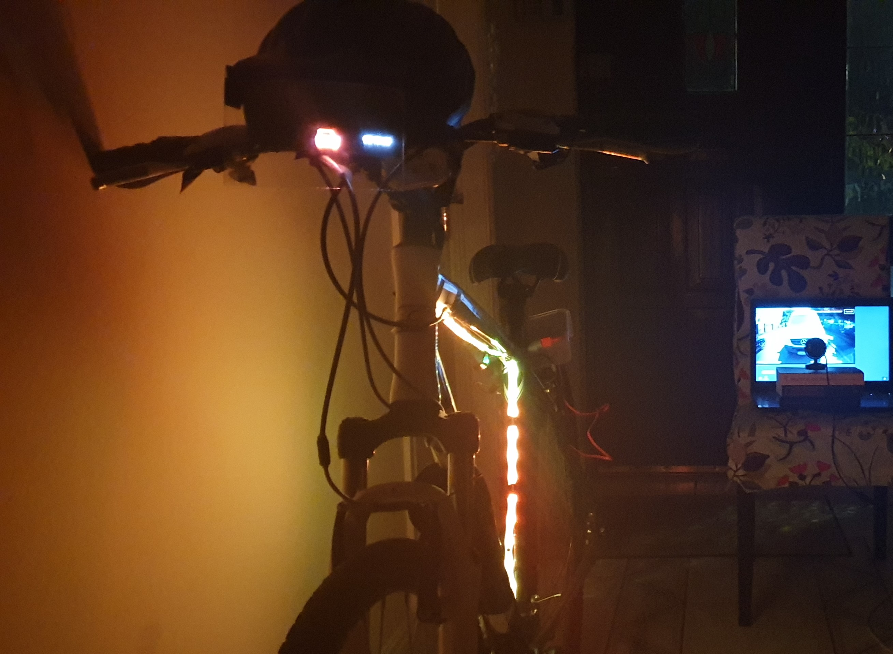
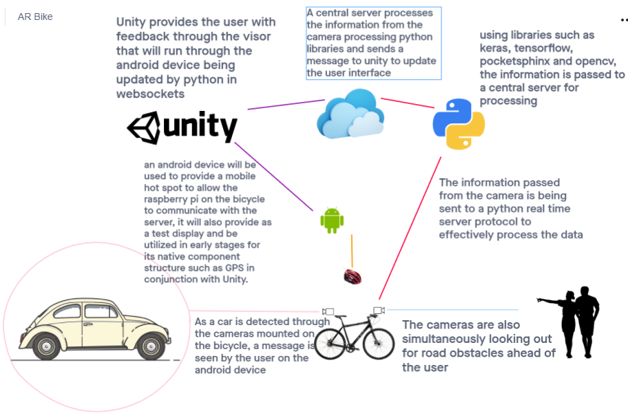
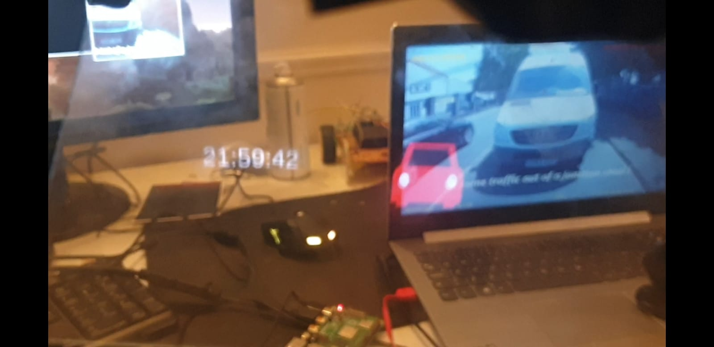

A Machine Learning IoT Bicycle Safety Project
This was a university project that lasted one year. As an individual project, the research and design required succinct sprints that built each area of the project. The research was in safety in cycling, road safety for both cyclists and other road users. The key areas were lack of visibility of cyclists with other road users and lack of awareness from the cyclist's perception. The conception of a solution to these issues was a smart bicycle, more particularly a smart helmet to go along with it. I wanted the design to be small and almost embeddable into the bicycle itself so I chose to use a combination of Arduino, RaspberryPi, and Android to run the platform on.
The smart aspect of the bicycle was to detect vehicles using OpenCV and machine learning libraries such as TensorFlow and Keras. Once vehicles were detected by the camera the Pi would pass Websocket datagrams to the Android device running Unity and the Arduino running the programmable LED strip fastened to the exterior of the bicycle. Learning how to build a dataset, train the dataset and running detection scripts was a very interesting exploration in neural networks. Updating the user that a vehicle was approaching from behind with an Optical-See-Thru-Display made with an android device. Simultaneously the vehicles would be alerted to the bicycle's presence by a sequence of programmed LEDs triggered by WebSockets on the bicycle's exterior.
The visual outline for the project was conceived of using dual cameras on front and rear. One of the dangerous behaviours associated with cycling was the use of mobile phones and devices with headphones. The solution is an attempt to eliminate this potential danger by embedding voice-controlled applications into the helmet itself. This was conceived in the python library pocket sphinx but implemented in Google voice assist Unity plugin. The OSTD was implemented by reversing the icons and text in Unity and reflecting the display on clear glass to the user. This was to be housed in a 3D printed cradle attached to the helmet (access to printers was not available due to Covid19) The aim of this project was to improve the safety environment of cyclists. The final prototype of the design was well received, I learned a lot about machine learning and felt good about the intention of the project as being something to help people's well being.